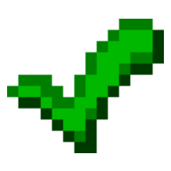
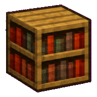
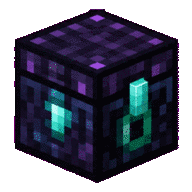
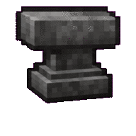
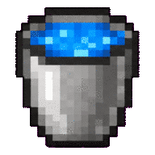
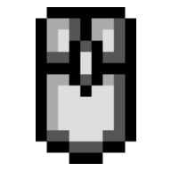

Windows
K dispoziciWindows 10 a 11, 64bit instalátor. Stahuje se přímo z GitHub Releases.
Minekube Launcher Open source · GPL-3.0
Knihovna instancí, modpacky z Modrinthu a správa Javy v jednom okně. Bez reklam, bez telemetrie, s češtinou v základu. Zdarma pro Windows.

Zdarma
Open source ↗
.mrpack i .zipModpacky, exporty z Prismu a MultiMC
Ticho po sítiŽádné reklamy, PostHog ani trackery
Java pod kontrolouVlastní instalace Javy pro každou verziPlatformy a funkce
Minekube Launcher zvládne Javu i modpacky, které k ní patří. Tady je přehled toho, co dnes opravdu umí — bez „brzy" a bez hvězdiček.
Windows 10 a 11, 64bit instalátor. Stahuje se přímo z GitHub Releases.
.AppImage a .deb jsou v plánu. Launcher je postavený na Tauri, takže to není slepá ulička.
| Vlastnost | Jak to funguje |
|---|---|
| Instance vedle sebe | Vanilla, Fabric, Forge, NeoForge i Quilt |
| Modpacky | .mrpack z Modrinthu i .zip z Prismu a MultiMC |
| Java | Automaticky ke každé verzi, víc instalací vedle sebe |
| Účet | Lokální profil, přihlášení zůstává v počítači |
| Telemetrie a reklamy | Žádné — PostHog i reklamní okno jsou vypnuté |
| Vzhled | Vlastní záře, pozadí, pohyb a úvodní obrazovka |
| Jazyk | 33 jazyků, čeština přeložená celá |
| Licence | Open source pod GPL-3.0, kód na GitHubu |
Jak to funguje
Od instalace po první blok. Nic mezitím neřešíš — launcher si Javu, verzi i mody obstará sám.
Stáhni instalátor pro Windows přímo z GitHubu. Žádná registrace, žádná platba, žádné reklamní okno.
Vytvoř instanci, naimportuj .mrpack z Modrinthu, nebo přenes .zip z Prismu a MultiMC. Ikonu si launcher vezme s sebou.
Stiskni hrát. Launcher sám stáhne správnou Javu i chybějící mody a spustí hru — bez ručního nastavování.
Co launcher umí
Launcher je postavený na otevřeném základu Modrinth App. Zůstalo všechno, co hraní potřebuje, a zmizelo to, co jen zdržuje.
Každá instance má vlastní profil, ikonu, verzi hry i načítací modul. Spustíš ji jedním kliknutím a nemusíš hledat, která verze Javy k ní patří.
Launcher načte modpack z Modrinthu i archiv, který už máš doma. Import z Prism Launcheru nebo MultiMC pozná podle instance.cfg i tehdy, když je zabalený ve složce.
.mrpack, .zip z Prismu a MultiMC.Ve vidlici není ani jedno místo, které by se hlásilo domů. Reklamní okno je vypnuté, PostHog analytika zůstala jako prázdná funkce a sociální vrstva Modrinthu zmizela i s přáteli.
Nastavení Vizuál přišlo s vidlicí: záře textů, pozadí, profil pohybu i vlastní úvodní obrazovka. Efekty jdou vypnout jedním přepínačem a launcher si volbu pamatuje.
Každá verze hry si vezme přesně tu Javu, kterou potřebuje. Instalace stojí vedle sebe a jedno tlačítko uklidí, co už nikdo nepoužívá.
Launcher se vejde na Windows 10 i 11. Mody a modpacky tahá z veřejného Modrinth API, takže katalog je pořád aktuální — a čeština je přeložená celá.
Prohlídka rozhraní
Tři záložky nastavení, které v launcheru opravdu najdeš. Náhledy níž věrně kopírují rozložení z verze 1.2.1.
Nová sekce, kterou originální launcher neměl. Vypínač animací zvládne i slabý notebook, vylepšené efekty naopak rozhýbou každé tlačítko.
Rychlé načítání drží navštívené stránky v paměti, aby se launcher vracel okamžitě. Tlačítko Uvolnit paměť je zase okamžitě zahodí.
Většina ochrany je trvale zapnutá a nejde vypnout. Discord Rich Presence zůstává volbou a ve výchozím stavu je vypnutá.

Co v launcheru najdešŠest míst, kam se v launcheru nejčastěji vracíš. Šipkami se posouváš, kolečkem myši taky.
Instance, skupiny a hledání. Každá instance má vlastní profil, ikonu a mody.
Modrinth katalog i soubory z disku. Mody se stahují paralelně a sdílí se mezi instancemi.
Víc instalací vedle sebe, každá verze hry si vezme tu svou. Uložiště jde uklidit jedním tlačítkem.
Záře, pozadí, profil pohybu a úvodní obrazovka. Efekty jdou vypnout jedním přepínačem.
Rychlé načítání, pozastavení na pozadí a kvalita renderu skinu. Všechno popsané, nic skryté.
Žádná telemetrie, anonymní identita a ochrana proti Log4Shell. Většina je zapnutá natrvalo.
Stažení
Instalátor bere web přímo z našeho GitHub repozitáře, takže vždy dostaneš nejnovější vydání. Launcher je pro Windows, Linux je v plánu.
Všechna vydání a poznámky k verzi najdeš na GitHub Releases ↗
Připravujeme
Stahování zahájeno — průběh a dokončení hlásí tvůj prohlížeč.
Až sestavení vyjde, objeví se tady samo — nic nemusíš měnit.
Časté otázky
Krátké a poctivé odpovědi na to, co se lidé ptají nejčastěji. Když něco chybí, ozvi se na GitHubu.
.zip s instance.cfg a mmc-pack.json — i když jsou zabalené ve složce. Launcher přenese i ikonu instance. Modpacky z Modrinthu jdou jako .mrpack.Další krok
Projdi si katalog Minekube modpacků — od vanilla+ po PvP. Launcher je pak načte za tebe.
Minekube Launcher vychází z otevřeného Modrinth Appu (GPL-3.0) a mody i modpacky načítá z veřejného Modrinth API. Nejsme s Modrinth ani Mojang spojeni. Licence GPL-3.0